👋 Hi there!! The Iterative Design assignment aims to let us experience the full process of mocking up a solution to the concept of a startup. Ultimately, we decided to choose Airhart Aeronatics. From creating our initial sketches, to low-fidelity Balsamiq, to many iterations of high-fidelity Figma’s, we’ve learned many user interface and user experience tools that help guide shaping the best and most accessible website.
Part 1: Sketching and Wireframing
Pre-Design Thinking
The startup we chose is
Airhart Aeronautics, a company that aims to let anyone fly a semi-autonomous airplane, making transportation via flying as easy as transportation via driving. We are designing a desktop-website interface, which will mainly impact any individual who has the mental and physical ability to control a vehicle. These users would be impacted as the aim to provide airplane transportation to be an alternative to (or entirely replace) driving will impact those who already drive. This may change in the future if the techniques to flying precede that of driving.
Sketching
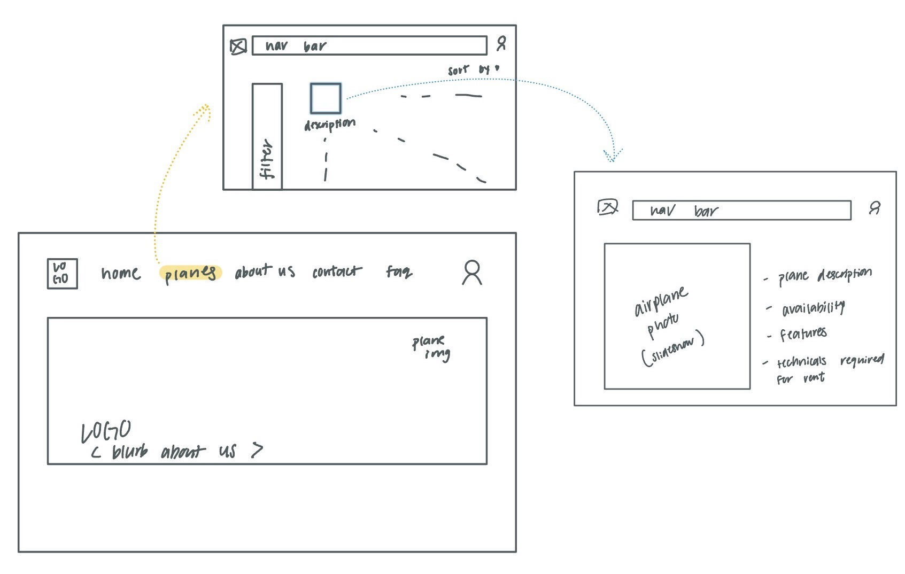
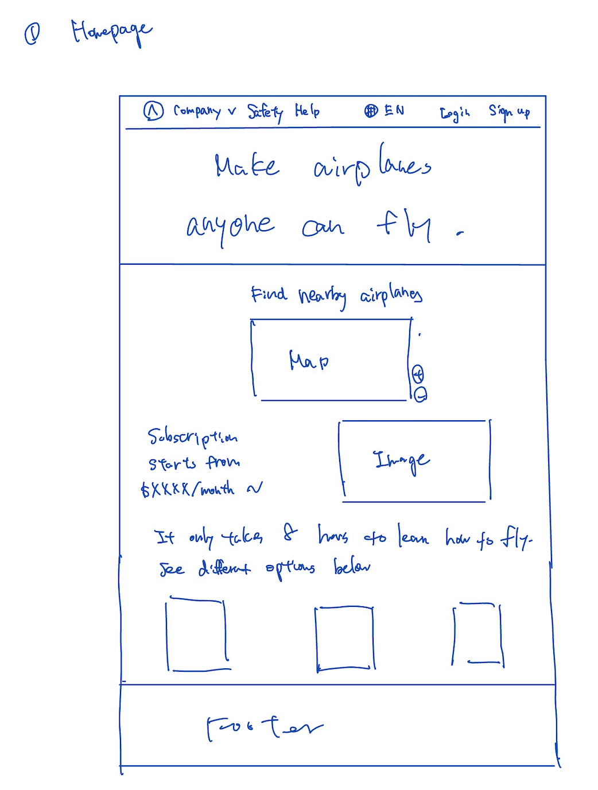
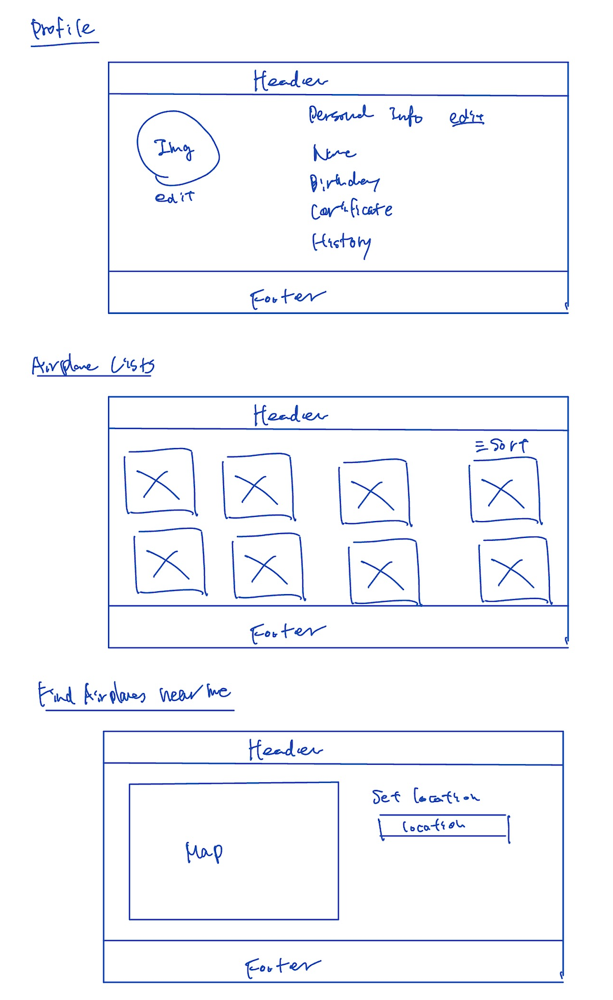
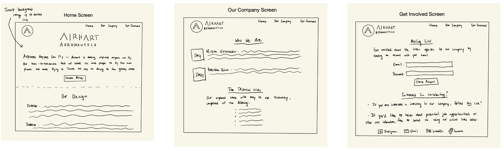
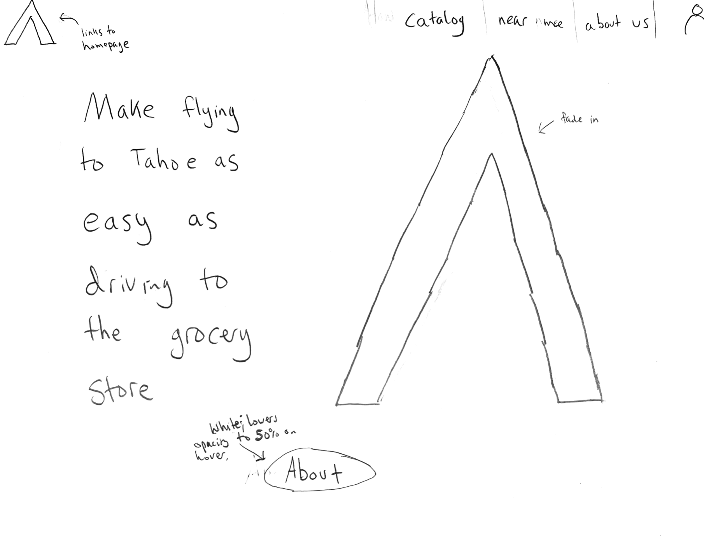
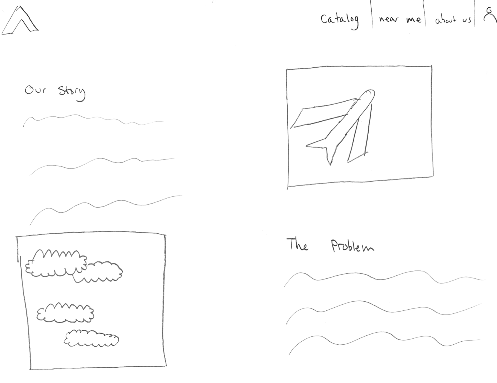
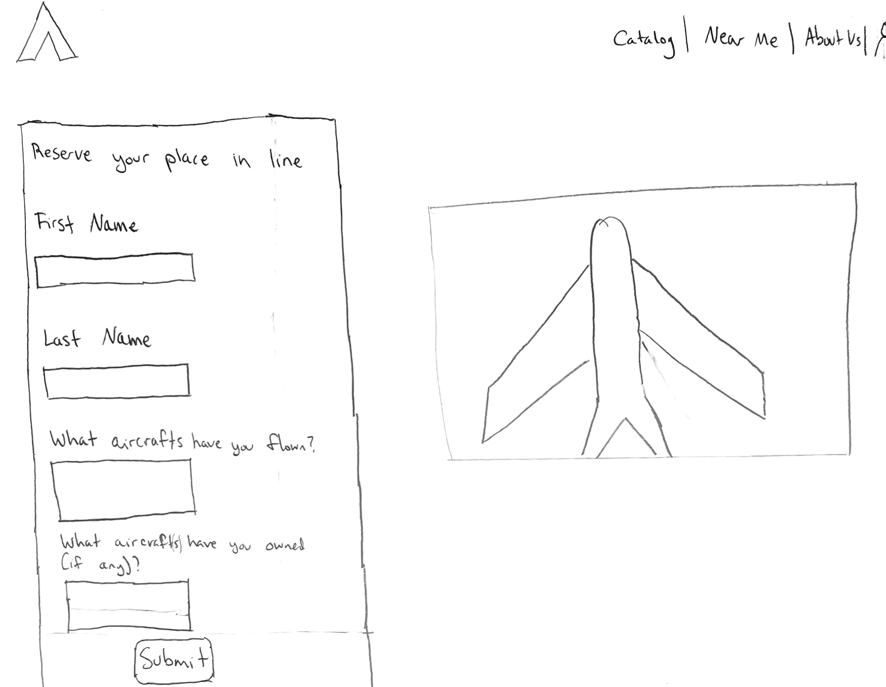
Combining ideas into a Wireframe
Here are the relevant design decisions that led to the following wireframe (re. if the sketches demonstrate effective solutions to the company goals, and if they are diverse and creative):
- Effectiveness: The company’s goal is to be able to make and provide planes that would allow 10x more people to be able to fly. Our sketches would be a platform in solving the problem: extending components from each sketch, we’re able to let users browse a catalog of available airplanes and experience a smooth checkout process with valid technical qualifications (a license).
- Diversity: They are diverse— the first sketch includes the user experience of navigating from the home page, to the catalog, to the profile of each plane. The second sketch proposes a subscription service and finding nearby airplanes. The third sketch includes an about page as well as a get involved page. The last sketch proposes a more in-depth about page as well as a reservation service for the rental service.
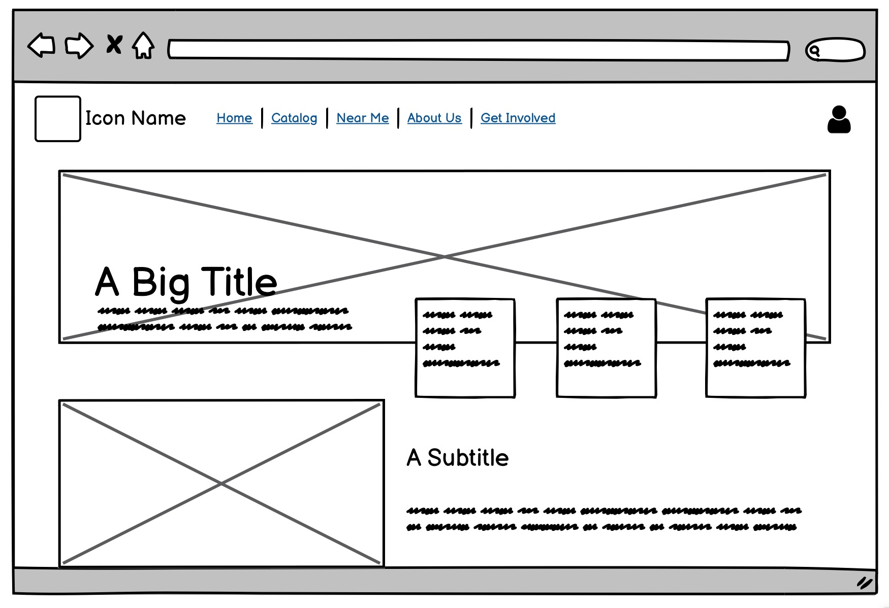
Home
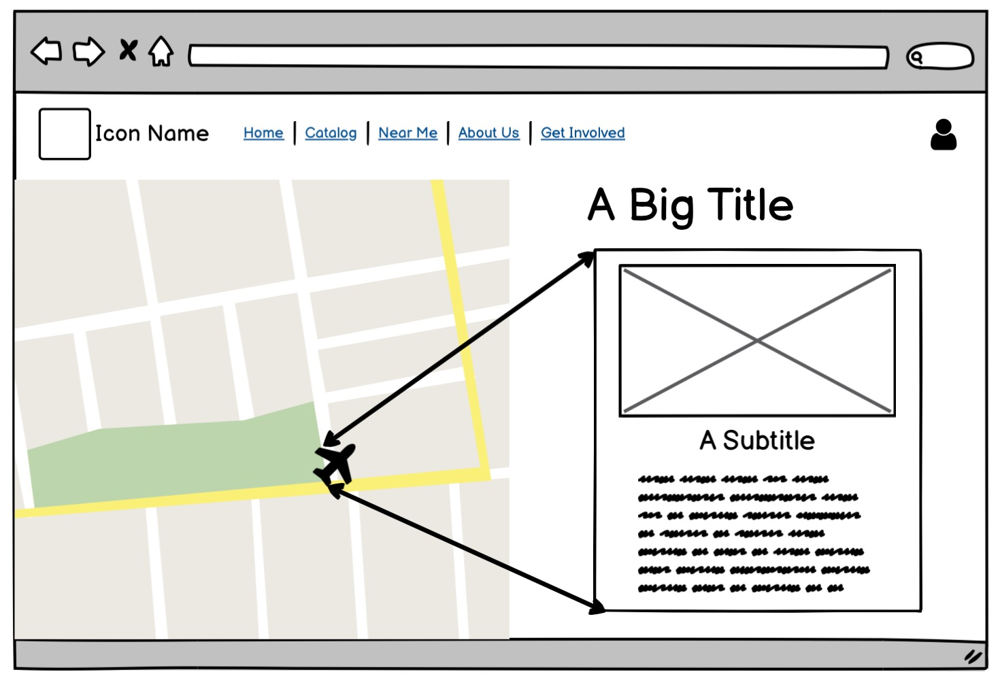
Planes Near Me
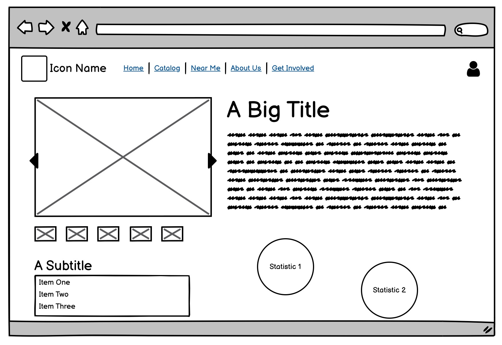
Plane Profile
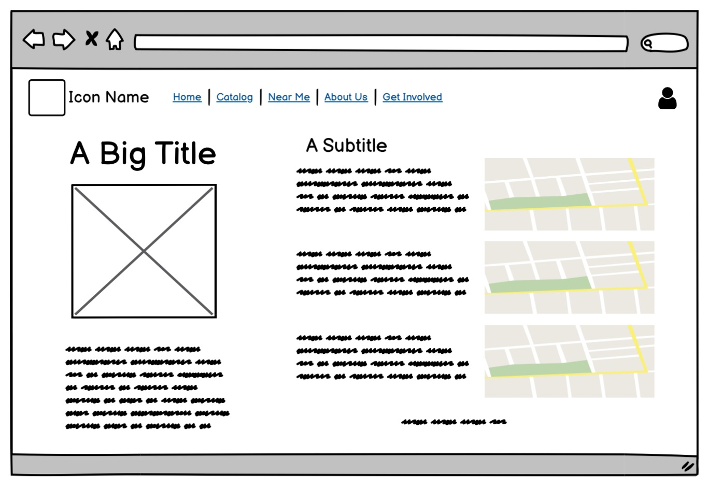
User Profile
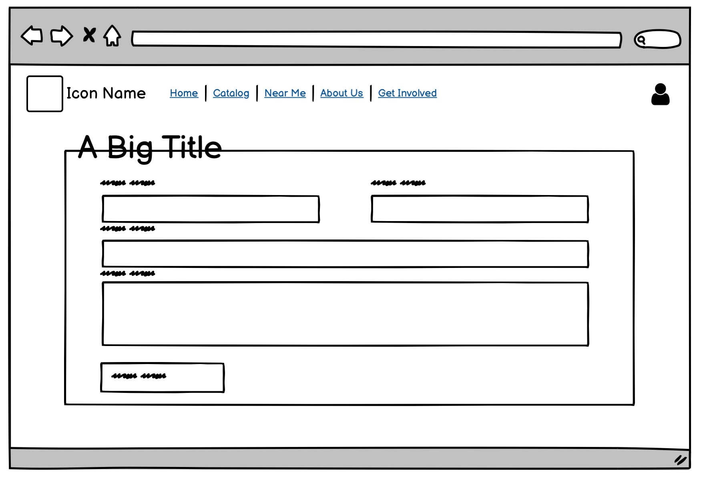
Contact Us
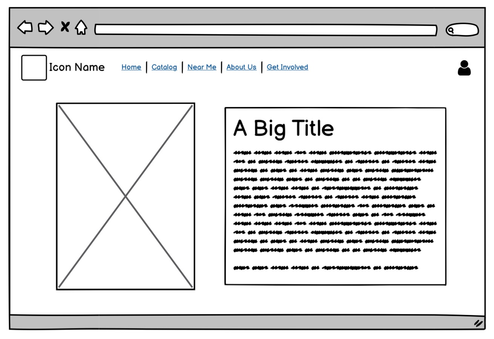
About Us
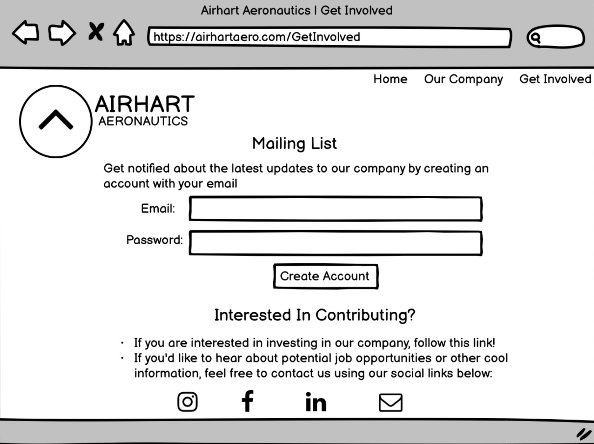
Contact Us
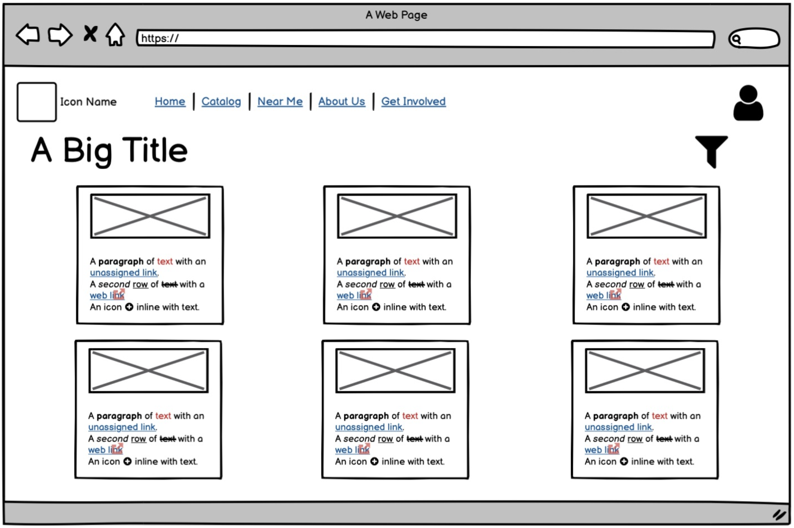
Catalog
Part 2: Mockups
Interactive High-Fidelity Mockup
Here is the link to our high-fidelity mockup after fixing the issues found during the studio (problems before this final version are listed below!)
Mockup Crit in Studio
After receiving all of our critiques from the studio, here is a summary of all the feedback we received:
- For the Plane Profile page, the critiques were mainly about having a “back” option and have a more specific scope than just the “available” button (e.g. have ranges of time that are available). The other idea was to have a button where people can write a review, rather than a display of review statistics.
- For our Catalog page, critics wanted more information, such as availability, name, and a “see details” rather than a large block of text. They also wanted it to be more scrollable, and have a bit more spacing as it currently looks a little overwhelmingly cluttered.
- For the About Us and Contact Us pages, critics wanted the pages to be more cohesive with the rest of the website aesthetics-wise. They recommended having side margins and less crammed text. They also wanted us to consider having a toggle button or a “see more” button to read the creator’s bios, as opposed to having a large block of text alongside the profile pictures.
- For our user profile page, critics wanted the background design to be less distracting and perhaps more transparent, or compartmentalize information / have more contrasting colors.
- For our Get Involved page, people were confused as to how they would obtain the information. They also believed that the contact us page was more connected with this Get Involved page, rather than the About Us page.
- For the Planes Near Me page, users were confused as to what the “previous” and “next” buttons referred to. They recommended having the two arrows show the closest planes on the left/right respectively.
Part 3: User Testing
Determine a Task
Here is the overarching task for the users: You're going on a trip with your friends and you want to rent an airplane. After clicking through the website, please find information about the HondaJet.
The steps to take to get to the HondaJet page are from the home page, click on "catalog", then navigate to "see details" for the HondaJet.
Testing Instructions & UserTesting.com
The intermediate tasks we asked the users to perform are listed below:
- Take as much time as you need to explore this website. Move on to the next task when you're ready.
- Navigate yourself to the catalog page. How intuitive was it to get to this page? Are the contents of this page aligned with your mental model of a plane rental website? Are there elements that are unnecessary, or missing? [5-point rating scale: Very difficult to Very easy]
- Find the HondaJet page via the catalog page. Is there anything you'd wish to know before booking a plane that is not provided? Is there information that you would consider unnecessary that is on the webpage? [5-point rating scale: Very difficult to Very easy]
The post-experience questions are listed below:
- What frustrated you most about this site?
- If you had a magic wand, how would you improve this site?
- What did you like about the site?
- How likely are you to recommend this site to a friend or colleague (0=Not at all likely, and 10=Very likely)?
Analysis of Results
For task one, all users said it was intuitive to get to the HondaJet page; they liked the interactive elements as well as the features/colors that guide them to each page.
For task two, we wanted them to review the catalog page. All had positive comments: it was easy, intuitive, and the information displayed were all important. However, two users wished there was location of the plane, as well as a reasoning behind the initial organization of the page before filtering.
For task three, we wanted the critics to review the profile page for the HondaJet. The biggest issue that the users caught was that we did not include price and capacity on this page, even tough it was in the catalog.
Overall, the users had an easy time navigating to each page and thought it was easy and intuitive. They made no errors on each task. The changes we’d make are to incorporate more information on the profile page, and make it scrollable rather than a static, one-page profile.
As for the post-experience questionnaire, the only qualm that one mentioned was that she wished there was a chatbot feature somewhere on the page that would make getting help more accessible. Otherwise, all three users said the website was intuitive, easy, and overall a good experience!
Thank you for checking out our project!